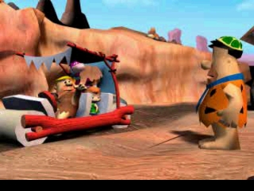

Review

Okay, so I'll keep this one short. I "beat" this game in about twenty minutes, and you can to, because it's a pretty milquetoast sports game consisting of ten lanes of bowling.
Oh, wait, did I say "milquetoast," and "bowling?" Woah woah, let me roll that back; this game has actually got some flavor to it; it's not your average, run-of-the-mill bowling game, and not for the fact that it has the vitamin guys in it!
You see, in this game, you ARE the ball! You'll play as Dino, Pebbles, Fred, Bam-Bam, or Barney, hop into a giant rock shell, and stroll down ten scenic lanes. Throughout, you collect items, like gems, and crush birds to earn extended play.
Oh, yeah, and the game kind of has a storyline, too. You see, Barney comes to pick Fred up from work, but Fred's hyper-corporatist d-bag boss doesn't want him to leave just yet. So, he makes a faustean bargain with Sa- I mean, the little green alien that everyone hated for being emblematic of the show's shark-jumping, and is allowed to "practice" bowling. It's like a 10 minute intro cutscene at the beginning of the game to tell this story; consider it a free Flintstones episode.
So, yeah, the whole game is technically bowling "practice" and it's not even bowling.
Final Verdict
This game earns a 3.5/10 on the ROMen-meter; bland, but leisurely for those looking to waste time.